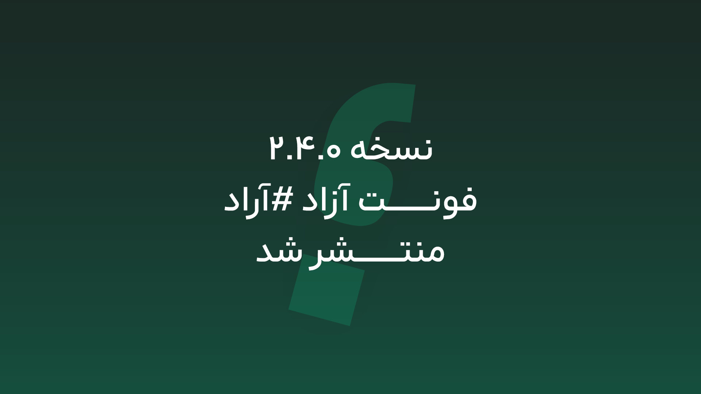
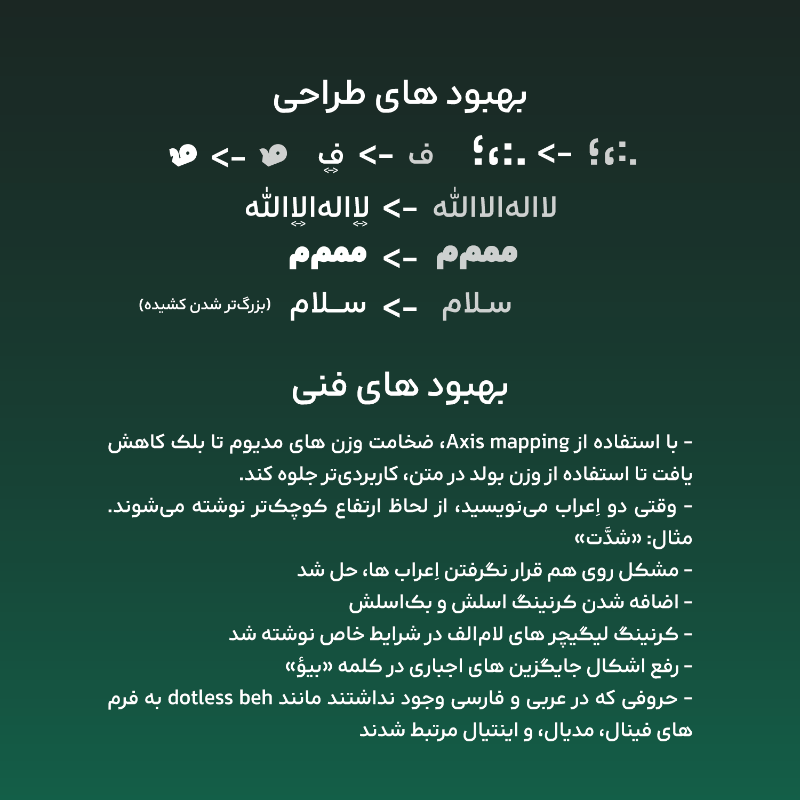

بروزرسانی ۲.۴.۰ آراد منتشر شد!
۹ اردیبهشت ۱۴۰۵ • نوشته شده توسط محمد درویشی
بعد از تجربه اتفاقات ناگوار سال گذشته(که همچنان در آن هستیم)، و از دست دادن شماری از جان های پاک مردم ایران، در این عید مبارک، فرصت انتشار نسخه جدید فونت آراد را بدست آوردم. شخصاً آرزو دارم که این مجموعه اتفاقات، با پیروزی ایران، و تضعیف ظلم و قلدری قدرت ها، به پایان برسد.
در این نسخه از فونت آراد شامل بهبود های کوچکی هستیم که در تجربه کاربری، تاثیر محسوسی دارند.

با استفاده از Axis mapping، ضخامت وزن های مدیوم تا بلک کاهش یافت تا استفاده از وزن بولد در متن، کاربردیتر جلوه کند.
وقتی دو اِعراب مینویسید، از لحاظ ارتفاع کوچکتر نوشته میشوند. مثال: «شدَّت»
نقطه و دو نقطه، نقطه ویرگول بهبود یافتند
اندازه نویسه کشیده بزرگتر شد
«ف» دراز تر شد
خانواده لیگیچر «لا» دراز تر شد
شکل میم در مستر ExBlack بازبینی و تغییر کرد
اضافه شدن کرنینگ اسلش و بکاسلش
طراحی «ــٌـ» در مستر ExBlack مشکل داشت و حرف ناخوانا بود که اصلاح شد
کرنینگ لیگیچر های لامالف در شرایط خاص نوشته شد
رفع اشکال جایگزین های اجباری در کلمه «بیؤ»
حروفی که در عربی و فارسی وجود نداشتند مانند dotless beh به فرم های فینال، مدیال، و اینتیال مرتبط شدند